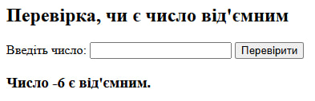
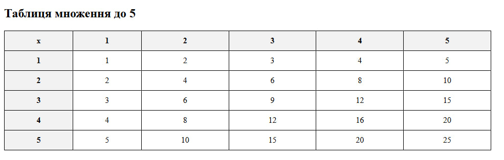

Тема: Управління потоками виконання
Виконавець: Старенький Богдан Сергійович
Група: KN1-B22
Напишіть програму, яка перевіряє, чи є введене число від'ємним, використовуючи конструкцію if.
Переглянути розв’язок Напишіть скрипт з вкладеними циклами для виведення таблиці множення до 5.
Переглянути розв’язок 